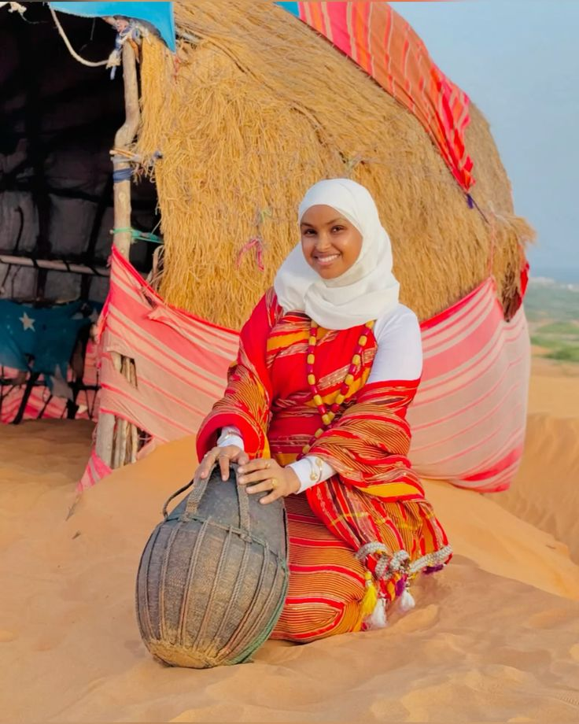
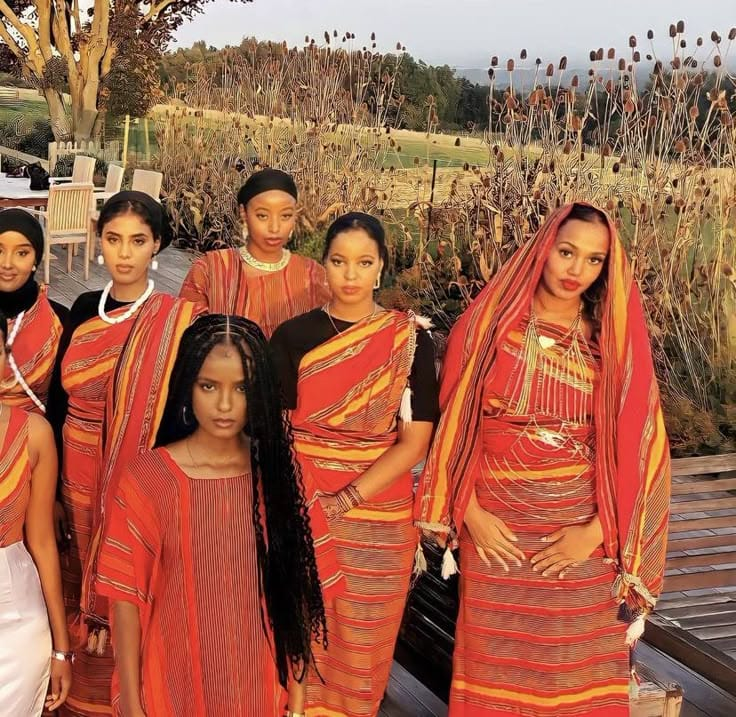

Beauty

Colorful designs show elegance and creativity
Identity

It represents Somali pride around the world

Guntiino is one of the most famous traditional dresses worn by Somali women. It represents Somali culture beauty and identity
For many generations, Somali women have worn Guntiino during weddings, Eid celebrations, cultural events and important occasions
Today, young Somali girls continue to wear Guntiino by combining traditional designs with modern fashion It shows pride in Somali heritage

Colorful designs show elegance and creativity
It represents Somali pride around the world